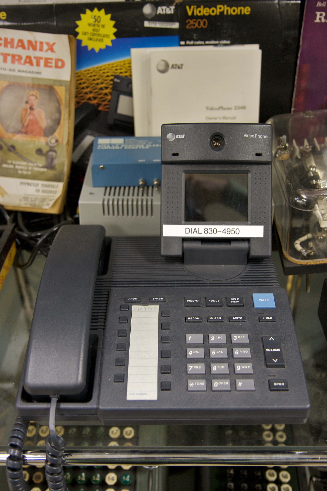

AT&T VideoPhone 2500
A $1,500 color videophone that squeezed 10 frames a second out of a phone line

Overview
Announced at a news conference on January 6, 1992, and sold from 1992 to 1995, the AT&T VideoPhone 2500 looked like a normal desk phone until you flipped up its 3.3-inch color LCD. A camera sat above the screen, a privacy shutter covered the lens, and the ritual was simple: dial normally, then press a key to activate video.
The engineering feat was fitting compressed color video onto an ordinary POTS phone line. The analog connection ran at roughly 19 kilobits per second, of which the video stream used about 11,200 bit/s, achieving at most 10 frames per second and often far less — a jerky, smeared but real moving image of the person you were talking to. AT&T used its proprietary Global VideoPhone Standard (GVS), developed with Compression Labs Incorporated, the company behind the era's videoconferencing codecs.
Priced at $1,500 (later $1,000), the VideoPhone 2500 sold only about 30,000 units, mostly outside the United States. It was the direct descendant of Bell Labs' Picturephone — which AT&T itself had concluded was 'a concept looking for a market' — finally small and cheap enough to try, and still a flop. FaceTime would arrive eighteen years later.
Deep dive
The VideoPhone 2500 made 'seeing the call' a deliberate, physical act: unfold the screen, decide whether the shutter stays open, dial, then press the video key. The privacy shutter — a small physical object controlling whether the other person could see you — is the kind of hardware affordance that vanished when video calling collapsed into software.
The 11,200 bit/s video stream on a ~19 Kbps analog line is a portrait of compression at its heroic limit. The device had to decide what mattered most about a face at under a third of a frame per second, and it chose: you could see your caller move, and that was the whole point.
Team & pioneers
- AT&T Consumer Products. Marketed the VideoPhone 2500 from 1992 to 1995; Robert M. Kavner, group executive, announced it.
- Compression Labs Incorporated (CLI). Partner on the low-bit-rate video compression technology.
- AT&T Bell Laboratories. Institutional lineage from the Picturephone program that preceded it.